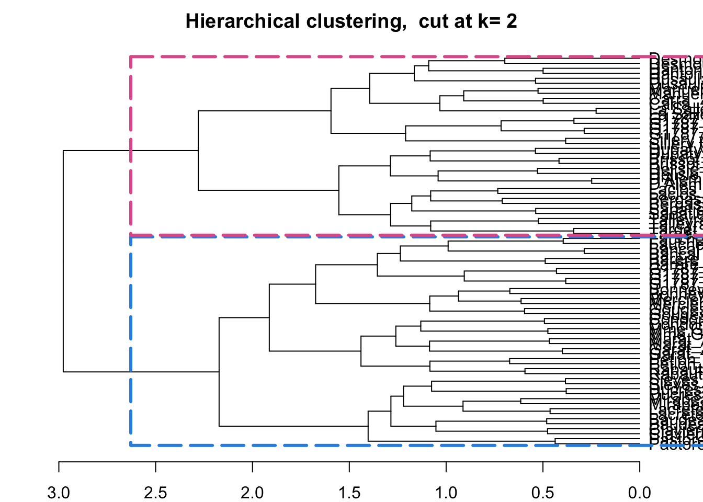
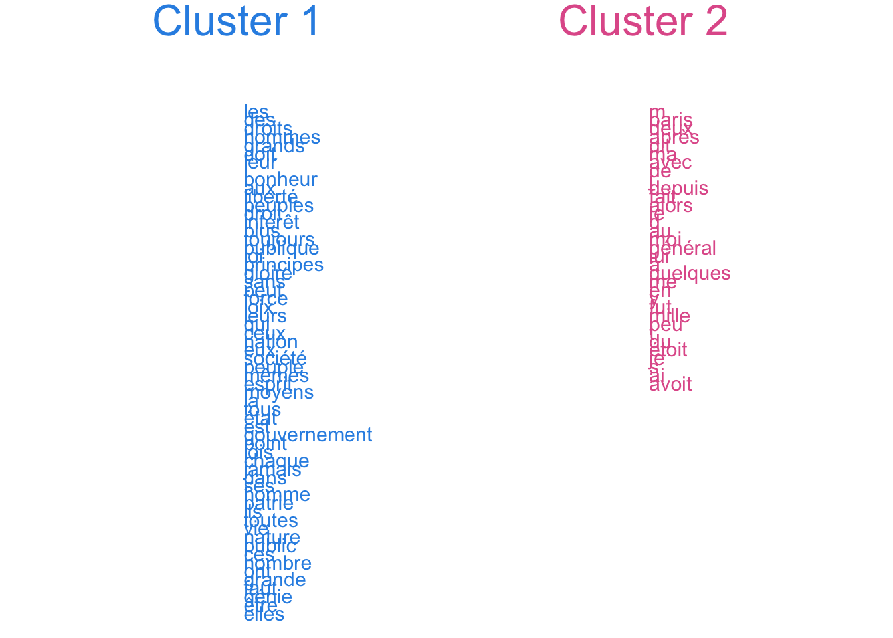
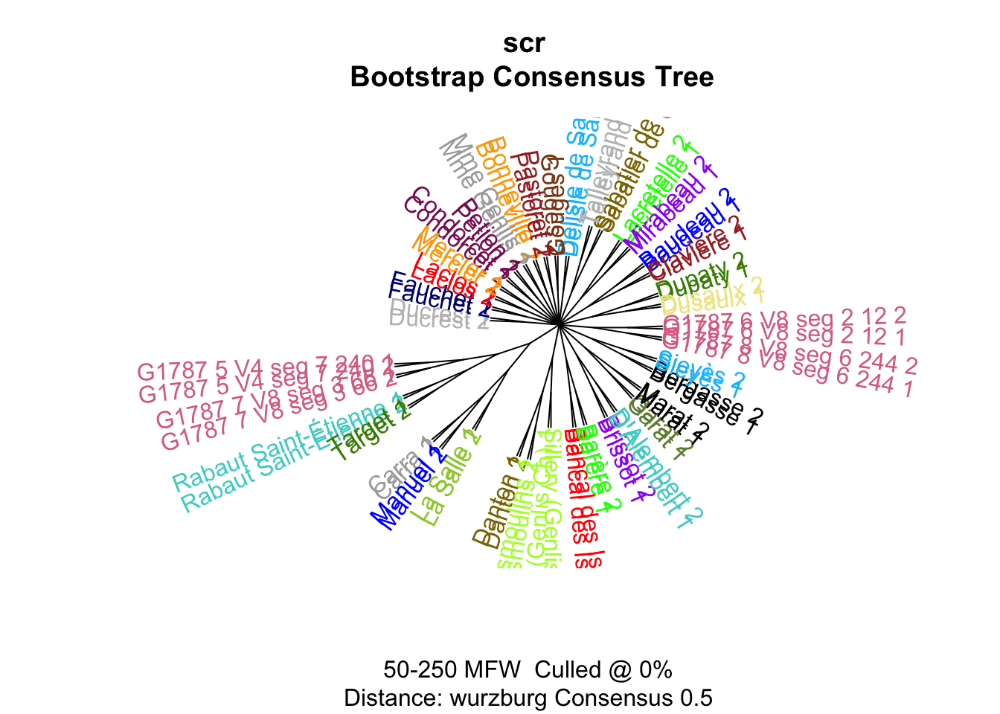
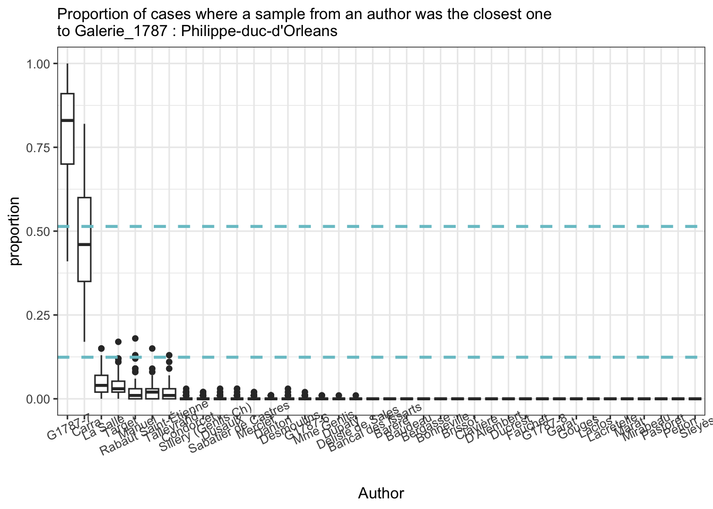
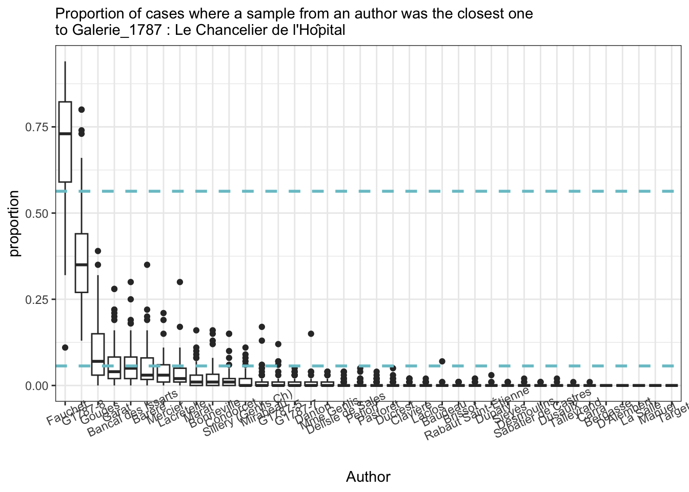
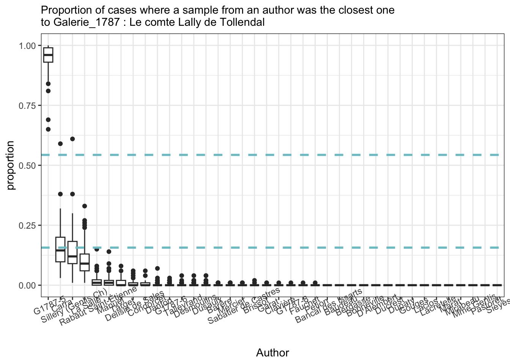
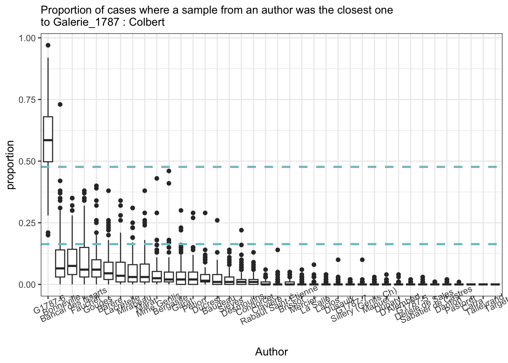

library(tidyverse)
library(tidytext)
library(stringi)
library(stylo)
library(seetrees)G1787
load pckg
functions
sample independent
sample_independent_opt <- function(tokenized_df,
n_samples,
sample_size,
text_var = "word",
folder = "../corpus_sampled/",
overwrite=T) {
dir.create(folder)
if(overwrite) {
do.call(file.remove, list(list.files(folder, full.names = TRUE)))
}
shuff <- tokenized_df %>%
group_by(author) %>%
sample_n(n_samples * sample_size) %>% # sample tokens
# to each sampled token assign randomly a sample number
mutate(sample_x = sample( # sample = reshuffle the numbers of samples repeated below
rep( # repeat
1:n_samples, # the numbers of samples (1, 2, 3...)
each = sample_size # each is sample_size times repeated
))) %>%
# create a column author_sampleX
unite(sample_id, c(author, sample_x), remove = F) %>%
# group and paste together by sample_id (some kind of special paste with !!sym() )
group_by(sample_id) %>%
summarise(text = paste(!!sym(text_var), collapse = " "))
# write samples
for(i in 1:nrow(shuff)) {
write_file(file = paste0(folder, shuff$sample_id[i],".txt"), shuff$text[i])
}
} diy stylo
diy_stylo <- function(folder = "../corpus_sampled/",
mfw = 200,
drop_words = T,
feature = "word",
n_gram = 1) {
# read the sampled texts from the folder corpus_sampled/
# the feature is either word or charaters prob
# the tokenizer returns lists of tokens for each text
tokenized.texts = load.corpus.and.parse(
files = list.files(folder, full.names = T),
features = feature,
ngram.size = n_gram
)
# computing a list of most frequent words (trimmed to top 2000 items):
features = make.frequency.list(tokenized.texts, head = 2000)
# producing a table of relative frequencies:
data = make.table.of.frequencies(tokenized.texts, features, relative = TRUE)#[,1:mfw]
# --- cleaning ---
# remove stop words
s_words <- str_detect(colnames(data),paste(strong_words,collapse="|"))
if(drop_words) {
data <- data[,!s_words]
}
# crop mfw
data <- data[, 1:mfw]
# clean document names
rownames(data) <- str_remove_all(rownames(data), "^.*?//") # clean rownames from full paths
# output
return(data)
}load data
fh <- list.files(path = "../corpus_cln/",
full.names = T)
# corpus compilation
corpus <- tibble(
path = fh,
text = sapply(path, read_file)
)
# preparation for tokenisation
corpus_t <- corpus %>%
# remove G1785
filter(!str_detect(path, "G1785")) %>%
# extract authors
mutate(author = ifelse(str_detect(path, "G1787"), # keep G1785 names
str_extract(path, "G1787_\\d+_\\w+"),
# extract all others
str_extract(path, "corpus_cln//.*?_")),
# cleaning
author = str_remove_all(author, "corpus_cln//|_$")) %>%
# remove paths for individual files
select(-path)
str(corpus_t)tibble [138 × 2] (S3: tbl_df/tbl/data.frame)
$ text : Named chr [1:138] "microcopy resotution test chart nbs ansi and iso test chart french revolution research collejoton lesarchivesde"| __truncated__ "convention nationale j c s et projet de décret sur l éducation nationale prononcés a la convention nationale le"| __truncated__ "des prochaines tee t s de l an par jean henri bancal représentant du peuple à la convention nationale au consei"| __truncated__ "observations j rés entées üiu a l assemblee nationale par m parère de fieuzac député du bigorue sur la nécejfit"| __truncated__ ...
..- attr(*, "names")= chr [1:138] "../corpus_cln//Bancal des Issarts_1.txt" "../corpus_cln//Bancal des Issarts_3.txt" "../corpus_cln//Bancal des Issarts_5.txt" "../corpus_cln//Barère_10.txt" ...
$ author: chr [1:138] "Bancal des Issarts" "Bancal des Issarts" "Bancal des Issarts" "Barère" ...corpus_t %>% count(author, sort = T)# A tibble: 41 × 2
author n
<chr> <int>
1 Bergasse 15
2 Baudeau 11
3 Clavière 10
4 Mercier 7
5 Desmoulins 6
6 Epremesnil 6
7 Barère 5
8 Manuel 5
9 Petion 4
10 Sillery (Genlis Ch) 4
# ℹ 31 more rowsTokenization
corpus_tokenized <- corpus_t %>%
unnest_tokens(input = text, output = word, token = "words")
sample_n(corpus_tokenized, 6)# A tibble: 6 × 2
author word
<chr> <chr>
1 Baudeau instruction
2 Condorcet placé
3 Dupaty me
4 Mirabeau le
5 Bergasse appris
6 Baudeau leurs n words in samples
corpus_tokenized %>%
filter(!str_detect(author, "^G1787")) %>%
count(author, sort = T) %>% tail(10)# A tibble: 10 × 2
author n
<chr> <int>
1 Mme Genlis 27570
2 Rabaut Saint-Étienne 26624
3 Bancal des Issarts 24455
4 Fauchet 22813
5 Gouges 17063
6 La Salle 16210
7 Sillery (Genlis Ch) 12750
8 Condorcet 12729
9 Epremesnil 5874
10 La Platière 902corpus_tokenized %>%
filter(str_detect(author, "^G1787")) %>%
count(author, sort = F)# A tibble: 4 × 2
author n
<chr> <int>
1 G1787_5_V4_seg_7_240 11616
2 G1787_6_V8_seg_2_12 11392
3 G1787_7_V8_seg_3_66 11891
4 G1787_8_V8_seg_6_244 8558Remove smallest samples
corpus_tokenized <- corpus_tokenized %>%
# too small sample
filter(author != "La Platière")
short_samples <- corpus_tokenized %>%
count(author) %>%
filter(n < 8000) %>%
pull(author)
# store shortest in a variable for easier removal later
short_samples[1] "Epremesnil"corpus_tokenized <- corpus_tokenized %>%
filter(!author %in% short_samples)sampling & naive stylo
set.seed(5678)sample_independent_opt(
tokenized_df = corpus_tokenized %>% filter(!author %in% short_samples),
sample_size = 4000,
n_samples = 2)Warning in dir.create(folder): '../corpus_sampled' already existsfirst clustering
test1 <- stylo(
gui = F,
corpus.dir = "../corpus_sampled/",
corpus.lang = "Other",
mfw.min = 200,
mfw.max = 200,
analyzed.features = "w",
ngram.size = 1,
distance.measure = "wurzburg"
)
features
test1$features.actually.used
------------------------------------------------
features (e.g. frequent words) actually analyzed
------------------------------------------------
[1] de la les le l
[6] à des que il d
[11] qui et qu en un
[16] dans est ne a du
[21] pour une n on ce
[26] plus par s pas au
[31] se je sur c son
[36] vous lui nous m y
[41] elle mais cette ils ses
[46] si leur avec ces ou
[51] tous sa j aux même
[56] être tout t comme ont
[61] sans dont leurs peut bien
[66] fait point faire où étoit
[71] toutes me avoit sont encore
[76] avoir homme hommes été nos
[81] deux moins ceux toujours cet
[86] peuple doit liberté elles contre
[91] autres ai grand faut autre
[96] fut toute celui après mon
[101] donc notre temps dit jamais
[106] roi france ni quelques peu
[111] quand ainsi loi nation là
[116] tant rien sera esprit eux
[121] nature dire celle ordre entre
[126] droit votre aussi ma trois
[131] état pouvoir sous corps jour
[136] citoyens fois donner non parce
[141] alors mêmes trop car enfin
[146] soit très gouvernement grande loix
[151] mes mille paris public lois
[156] chaque by étoient digitized force
[161] quelque vos avoient partie chez
[166] grands patrie publique depuis général
[171] premier prince moment nom vérité
[176] peuples nombre monde vie ici
[181] voir mort moi rendre droits
[186] société gloire lieu louis bonheur
[191] te yeux eu ans génie
[196] principes cela intérêt moyens dieu
(total number of elements: 200)view tree
view_tree(test1, k = 2, label_size = 4)

strong words
strong_words <- c("^peuple", "^louis$", "^liberté", "^citoyen",
"^nation", "^aujourd", "^je$", "^me$", "^ma$", "^j$", "^mon$",
"^mes$", "^lois$", "^hommes$", "^grands$", "^dont$",
"^paris$")bct
# take other samples
sample_independent_opt(
tokenized_df = corpus_tokenized,
n_samples = 2,
sample_size = 3000)
# bootstrap consensus
bct <- stylo(
gui = F,
corpus.dir = "../corpus_sampled/",
corpus.lang = "Other",
analyzed.features = "w",
ngram.size = 1,
mfw.min = 50,
mfw.max = 250,
mfw.incr = 1,
distance.measure = "wurzburg",
analysis.type = "BCT",
consensus.strength = 0.5
)
GI
locations
data <- diy_stylo(#folder = "../corpus_sampled/",
mfw = 200,
drop_words = T)
str(data) num [1:78, 1:200] 4.93 4.8 4.86 4.79 4.56 ...
- attr(*, "dimnames")=List of 2
..$ : chr [1:78] "Bancal des Issarts_1" "Bancal des Issarts_2" "Barère_1" "Barère_2" ...
..$ : chr [1:200] "de" "la" "les" "le" ...# rownames(data)
rownames(data) <- str_replace(rownames(data), "G1787_", "G1787-")
# rownames(data)
grep("G1787-5", rownames(data)) [1] 35 36grep("G1787-6", rownames(data))[1] 37 38grep("G1787-7", rownames(data))[1] 39 40grep("G1787-8", rownames(data))[1] 41 42G1787_5_Philippe-duc-d’Orleans
CI calculation
op_list_w <- vector(mode = "list", length = 5)
# loop for 5 runs of optimisation - THIS WILL TAKE TIME
for (i in 1:5) {
# in each run we rewrite the sampling folder & grab new samples
sample_independent_opt(
tokenized_df = corpus_tokenized,
n_samples = 2,
sample_size = 4000)
# take data from the corpus_sampled/ folder & turn it into a doc-term matrix
data = diy_stylo(mfw = 200,
feature = "word",
n_gram = 1)
rownames(data) <- str_replace(rownames(data), "G1787_", "G1787-")
# use the data for calculation of the confidence interval and write in the list
op_list_w[[i]] <- imposters.optimize(data[-c(35, 36), ]) # remove target
}
saveRDS(op_list_w, "G1787-5_GI_op_list.rds")op_list_w <- readRDS("G1787-5_GI_op_list.rds")
# op_list_w[[1]][1]
# extract the first element from each list & calculate mean
min_mean_w <- map(op_list_w, 1) %>% # find the first elements
unlist() %>% # unlist them to one vector
mean() # calculate mean
# min_mean_w
# same for the upper border
max_mean_w <- map(op_list_w, 2) %>%
unlist() %>% mean()
# max_mean_w
print(paste0("The zone of 'I don't know': ", min_mean_w, " to ", max_mean_w))[1] "The zone of 'I don't know': 0.124 to 0.514"imp_res <- vector(mode = "list", length = 100)
counter <- 0
for (i in 1:50) {
# create samples for each trial
sample_independent_opt(
tokenized_df = corpus_tokenized,
n_samples = 2,
sample_size = 4000)
# build doc-term matrix from the samples in the corpus_sampled folder
data <- diy_stylo(mfw = 200,
feature = "word",
n_gram = 1)
rownames(data) <- str_replace(rownames(data), "G1787_", "G1787-")
# test each of the true navalny sets
for (s in c(35, 36)) {
# run imposters test
r <- imposters(reference.set = data[-c(35, 36),], # remove test data from the ref
test = data[c(s),], # test one of the samples against the others
features = 0.5, # test 50% of the features in each trial
iterations = 100,
distance = "wurzburg"
)
# count iterations
counter <- counter + 1
# store results
imp_res[[counter]] <- tibble(candidate = names(r),
proportion = r)
print(counter)
}
}
saveRDS(imp_res, "G1787_5_imp_res.rds")# load saved data
imp_res <- readRDS("G1787_5_imp_res.rds")
# plot
imp_res %>%
bind_rows() %>% #stack all the optained prop tables into one
ggplot(aes(x = reorder(candidate, - proportion),
y = proportion)) +
geom_boxplot() +
theme_bw() +
# add horisontal lines to show the zone of uncertainty
geom_hline(aes(yintercept = min_mean_w),
linewidth = 1,
linetype = 2,
color = "cadetblue3") +
geom_hline(aes(yintercept = max_mean_w),
linewidth = 1,
linetype = 2,
color = "cadetblue3") +
labs(x = "Author",
subtitle = "Proportion of cases where a sample from an author was the closest one\nto Galerie_1787 : Philippe-duc-d'Orleans") +
theme(axis.text.x = element_text(angle = 25))
G1787_6 Le Chancelier de l’Hôpital

G1787_7 Le comte Lally de Tollendal
[1] "The zone of 'I don't know': 0.156666666666667 to 0.543333333333333"
G1787_8 Colbert
[1] "The zone of 'I don't know': 0.163333333333333 to 0.476666666666667"
Conclusions
Selected articles from the Galerie ~1787:
It is likely that fragments 5 and 7 (Philippe duc d'Orleans & Lally de Tollendal) were written by the same author;
The author of the 8th fragment (Colbert) is likely not in the list;
There is some similarity between texts by Jean-Louis Carra and the fragment 5 (Philippe duc d'Orleans)
There is probability that the fragment 6 (Le Chancelier de l'Hôpital) might have been written by abbé (Claude) Fauchet
Issues
for some authors there are not enough data on gallica (e.g. Villar, Epremésnil)
for the others the choice of the texts is difficult:
texts of different genres and, e.g., 1st / 3rd person narration;
non-OCRed texts
=> to find a solution a more thoughtful selection of texts might be needed
Solutions requiring additional work:
for each target text the texts selected to as reference corpus might differ ;
as an alternative: a more general download-all strategy, probably with 1st/3rd person later tagging ;